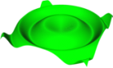

Mathematorium
Highly interactive mathematical visualization
software.
Coming
Soon!
Notable Features:
- Graph 3D functions in Cartesian, Cylindrical, Spherical, and
Parametric coordinate spaces
- Animate 3D functions by using time as a parameter
- Edit user defined variables on the fly using a slider, updating
the graph immediately
- Color surfaces with functions, using a customizable color map or
assigning red, green, and blue independently
- Export graphs to the EPS Vector Graphics format for high quality
images
© Curransoft
2007. All rights reserved.